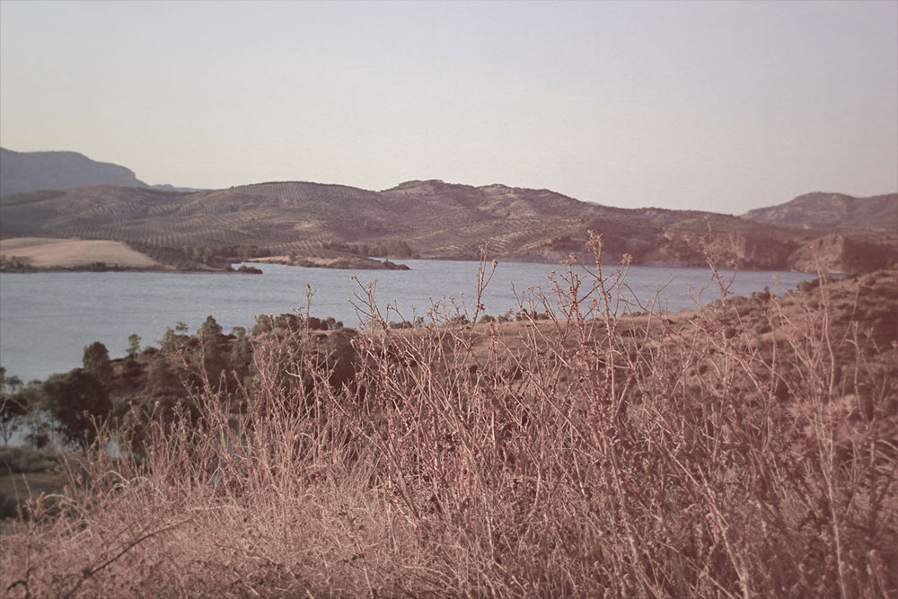

TURN: Washington's Spies Interactive Map
Sed posuere consectetur est at lobortis. Nulla vitae elit libero, a pharetra augue. Morbi leo risus, porta ac consectetur ac, vestibulum at eros. Nulla vitae elit libero, a pharetra augue.
Donec id elit non mi porta gravida at eget metus. Maecenas faucibus mollis interdum. Nullam quis risus eget urna mollis ornare vel eu leo. Cum sociis natoque penatibus et magnis dis parturient montes, nascetur ridiculus mus. Duis mollis, est non commodo luctus, nisi erat porttitor ligula, eget lacinia odio sem nec elit.
Nulla vitae elit libero, a pharetra augue. Morbi leo risus, porta ac consectetur ac, vestibulum at eros. Praesent commodo cursus magna, vel scelerisque nisl consectetur et. Morbi leo risus, porta ac consectetur ac, vestibulum at eros. Donec id elit non mi porta gravida at eget metus. Morbi leo risus, porta ac consectetur ac, vestibulum at eros. Vestibulum id ligula porta felis euismod semper.

Sed posuere consectetur est at lobortis. Nulla vitae elit libero, a pharetra augue. Morbi leo risus, porta ac consectetur ac, vestibulum at eros. Nulla vitae elit libero, a pharetra augue.
Donec id elit non mi porta gravida at eget metus. Maecenas faucibus mollis interdum. Nullam quis risus eget urna mollis ornare vel eu leo. Cum sociis natoque penatibus et magnis dis parturient montes, nascetur ridiculus mus. Duis mollis, est non commodo luctus, nisi erat porttitor ligula, eget lacinia odio sem nec elit.
Nulla vitae elit libero, a pharetra augue. Morbi leo risus, porta ac consectetur ac, vestibulum at eros. Praesent commodo cursus magna, vel scelerisque nisl consectetur et. Morbi leo risus, porta ac consectetur ac, vestibulum at eros. Donec id elit non mi porta gravida at eget metus. Morbi leo risus, porta ac consectetur ac, vestibulum at eros. Vestibulum id ligula porta felis euismod semper.
Sed posuere consectetur est at lobortis. Praesent commodo cursus magna, vel scelerisque nisl consectetur et. Praesent commodo cursus magna, vel scelerisque nisl consectetur et. Duis mollis, est non commodo luctus, nisi erat porttitor ligula, eget lacinia odio sem nec elit. Praesent commodo cursus magna, vel scelerisque nisl consectetur et.
Etiam porta sem malesuada magna mollis euismod. Aenean lacinia bibendum nulla sed consectetur. Aenean eu leo quam. Pellentesque ornare sem lacinia quam venenatis vestibulum. Maecenas sed diam eget risus varius blandit sit amet non magna.